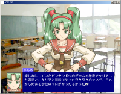

チュートリアル
顔を表示
メッセージボックスの左に顔の画像を表示させます。
顔の画像ファイルはグラフィックフォルダの中の「顔」フォルダに入れてください。
ファイルが用意できたら「顔表示」コマンドを選択してください。
「ファイル名」
に表示する画像の名前を設定し、OKをクリックします。
F5を押して実行してみてください。

このように顔が表示されれば成功です。
顔を消す時は「顔消去」コマンドを使ってください。
←戻る
進む→